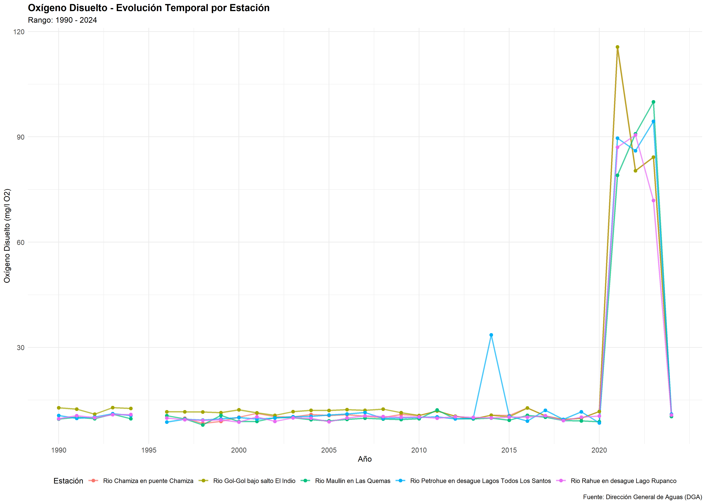
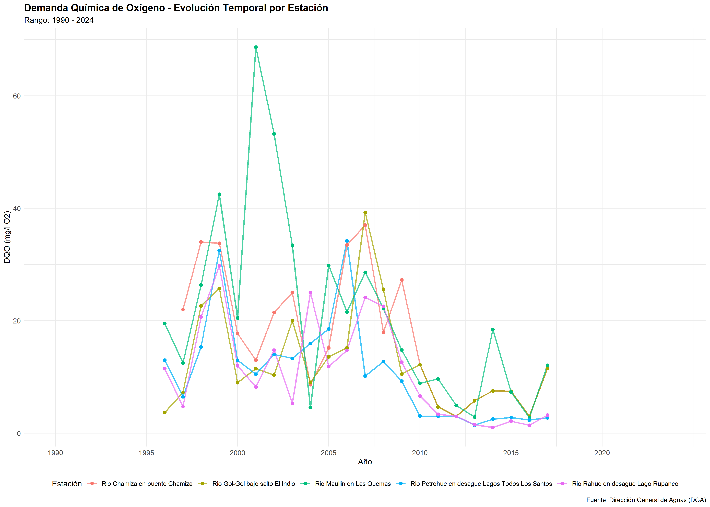
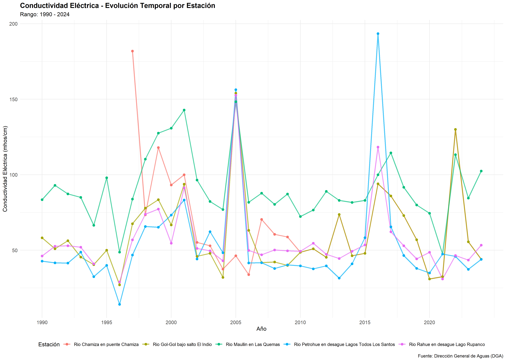
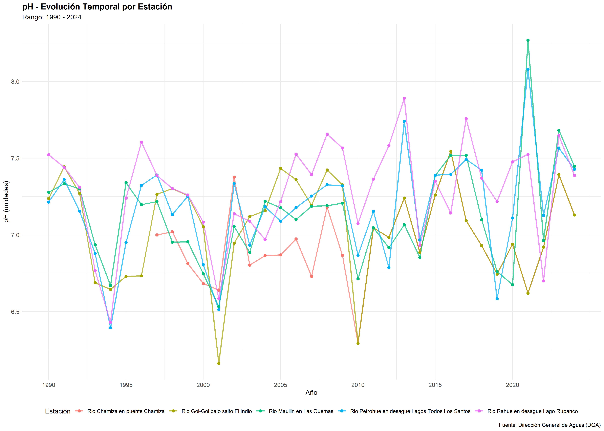
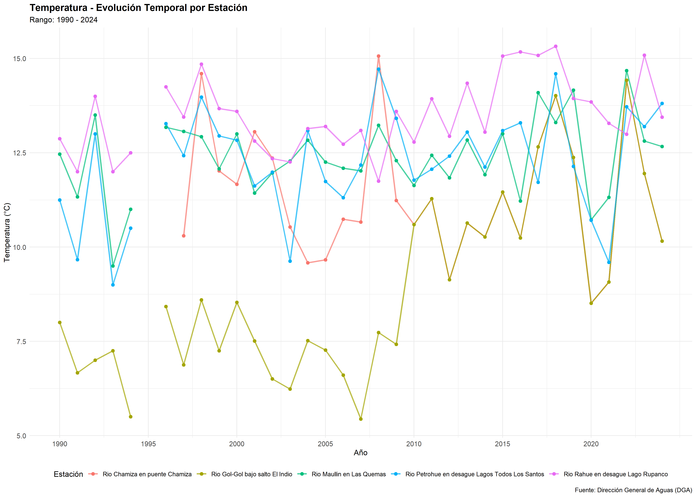

Décima Región de Los Lagos - Calidad del Agua
Gráficos parámetros fisicoquímicos de 5 estaciones de la X Región de Los Lagos
Estaciones de Monitoreo:
- Río Chamiza en puente Chamiza
- Río Gol-Gol bajo salto El Indio
- Río Maullin en Las Quemas
- Río Petrohue en desague Lagos Todos Los Santos
- Río Rahue en desague Lago Rupanco




